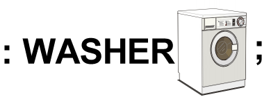
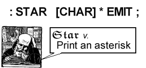
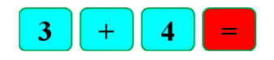
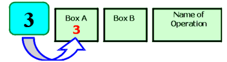
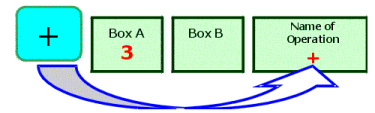
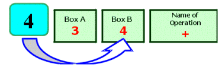
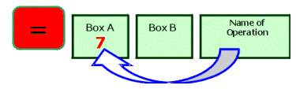
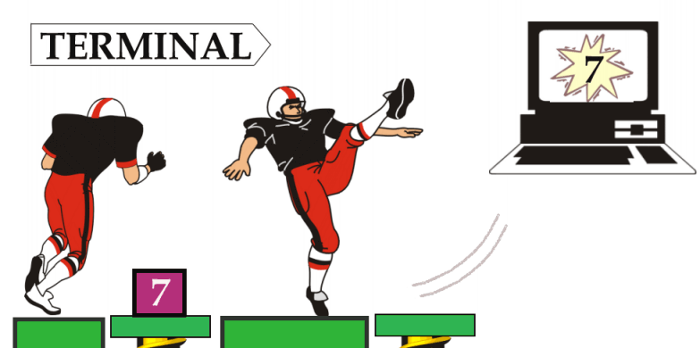
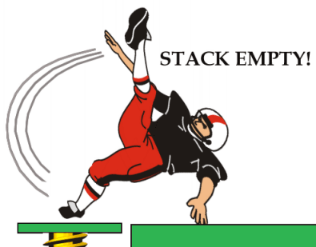
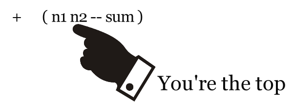

In this chapter we'll acquaint you with some of the unique properties of the Forth language. After a few introductory pages we'll have you sitting at a Forth terminal.
Imagine that you're an office manager and you've just hired a new, eager assistant. On the first day, you teach the assistant the proper format for typing correspondence. (The assistant already knows how to type.) By the end of the day, all you have to do is say "Please type this."
On the second day, you explain the filing system. It takes all morning to explain where everything goes, but by the afternoon all you have to say is "Please file this."
By the end of the week, you can communicate in a kind of shorthand, where "Please send this letter" means "Type it, get me to sign it, photocopy it, file the copy, and mail the original." Both you and your assistant are free to carry out your business more pleasantly and efficiently.
Good organization and effective communication require that you
Forth lets you organize your own procedures and communicate them to a computer in just this way (except you don't have to say "please").
As an example, imagine a microprocessor-controlled washing machine programmed in Forth. The ultimate command in your example is named WASHER. Here is the definition of WASHER, as written in Forth:
: WASHER WASH SPIN RINSE SPIN ;
In Forth, the colon indicates the beginning of a new definition. The first word after the colon, WASHER, is the name of the new procedure. The remaining words, WASH, SPIN, RINSE and SPIN, comprise the "definition" of the new procedure. Finally, the semicolon indicates the end of the definition.

Each of the words comprising the definition of WASHER has already been defined in our washing-machine application. For example, let's look at our definition of RINSE:
: RINSE FAUCETS OPEN TILL-FULL FAUCETS CLOSE ;
In this definition we are referring to things (faucets) as well as actions (open and close). The word TILL-FULL has been defined to create a "delay-loop" which does nothing but mark time until the water-level switch has been activated, indicating that the tub is full.
If we were to trace these definitions back, we would eventually find that they are all defined
in terms of a group of very useful commands that form the basis of all Forth systems. For example,
a complete ANS Forth with all extensions includes 371 such commands. Many of these commands are
themselves "colon definitions" just like our example words; others are defined directly in the
machine language of the particular computer. In Forth, a defined command is called a "word."
The ability to define a word in terms of other words is called "extensibility." Extensibility leads to a style of programming that is extremely simple, naturally well-organized, and as powerful as you want it to be.
Whether your application runs an assembly line, acquires data for a scientific environment, maintains a business application, or plays a game, you can create your own "living language" of words that relate to your particular need.
In this book we'll cover the most useful of the standard Forth commands.
One of Forth's many unique features is that it lets you "execute"
a word by simply naming the word. If you're working at a terminal keyboard, this can be as simple
as typing in the word and pressing the RETURN key.
Of course, you can also use the same word in the definition of any other word, simply by putting its name in the definition.
Forth is called an "interactive" language because it carries out your commands the instant that you enter them.
We're going to give an example that you can try yourself, showing the process of combining simple commands into more powerful commands. We'll use some simple Forth words that control your terminal screen. But first, let's get acquainted with the mechanics of "talking" to Forth through your terminal's keyboard.
Take a seat at your real or imaginary Forth terminal. We'll assume that someone has been kind enough to set everything up for you, or that you have followed all the instructions given for loading Forth on your particular computer.
Now press the key labeled:
RETURN
The computer will respond by saying
ok
The RETURN key is your way of telling Forth to acknowledge your request. The ok is Forth's
way of saying that it's done everything you asked it to do without any hangups. In this case, you
didn't ask it to do anything, so Forth obediently did nothing and said ok.
Now enter this:
15 SPACES
If you make a typing mistake, you can correct it by hitting the "backspace" key.
Back up to the mistake, enter the correct letter, and continue. When you have typed the line
correctly, press the RETURN key. (Once you press RETURN, it's too late to
correct the line.)
In this book, we use the symbol  to mark the point where
you must press the
to mark the point where
you must press the RETURN key. We also underline the computer's output (even though
the computer does not) to indicate who is typing what.
Here's what has happened:
15 SPACES
As soon as you pressed the return key, Forth printed fifteen blank spaces and then, having processed your request, responded ok (at the end of the fifteenth space).
Now enter this:
42 EMIT
The phrase "42 EMIT" tells Forth to print an asterisk (we'll discuss this command
later on in the book.) Here Forth printed an asterisk, then responded ok.
We can put more than one command on the same line. For example:
15 SPACES 42 EMIT 42 EMIT
This time Forth printed fifteen spaces and two asterisks. A note about entering words and/or numbers: we can separate them from another by as many spaces as we want for clarity. But they must be separated by at least one space for Forth to be able to recognize them as words and/or numbers.
Instead of entering the phrase
42 EMITover and over, let's define it as a word called "STAR."
Enter this:
: STAR 42 EMIT ;
Here STAR is the name; "42 EMIT" is the definition. Notice that we set off
the colon and semicolon from adjacent words with a space. Also, to make Forth definitions easy for
human beings to read, we conventionally separate the name of the definition from its contents with
three spaces.
After you have entered the above definitions and pressed RETURN, Forth responds ok, signifying that it has recognized your definition and will remember it. Now enter
STAR
Voila! Forth executes your definition of "STAR" and prints an asterisk.
There is no difference between a word such as STAR that you define yourself and a word such as EMIT that is already defined. In this book, however, we will print those words that are already defined in blue, so that you can more easily tell the difference.
Another system-defined word is CR, which performs a carriage return
and line feed at your terminal.
For example, enter this:
CR
As you can see, Forth executed a carriage return, then printed ok (on the next line).
Now try this:
CR STAR CR STAR CR STAR
Let's put a CR in a definition, like this:
: MARGIN CR 30 SPACES ;
Now we can enter
MARGIN STAR MARGIN STAR MARGIN STARand get three stars lined up vertically, thirty spaces in from the left.
Our MARGIN STAR combination will be useful for what we intend to do, so let's define
: BLIP MARGIN STAR ;
We will also need to print a a horizontal row of stars. So let's enter the following definition (we'll explain how it works in a later chapter):
: STARS 0 DO STAR LOOP ;
Now we can say
5 STARSor
35 STARSor any number of stars imaginable.
We will need a word which performs MARGIN, then prints five stars. Let's define it like this:
: BAR MARGIN 5 STARS ;
Now we can enter
BAR BLIP BAR BLIP BLIP CRand get a letter "F" (for Forth) made up of stars. It should look like this:
***** * ***** * *
The final step is to make this new procedure a word. Let's call the word "F":
: F BAR BLIP BAR BLIP BLIP CR ;
You've just seen an example of the way simple Forth commands can become a foundation for more complex commands. A Forth application, when listed, consists of a series of increasingly powerful definitions rather than a sequence of instructions to be executed in order.
To give you a sample of what a Forth application really looks like, here's a listing of our experimental application:
( Large letter F ) : STAR 42 EMIT ; : STARS 0 DO STAR LOOP ; : MARGIN CR 30 SPACES ; : BLIP MARGIN STAR ; : BAR MARGIN 5 STARS ; : F BAR BLIP BAR BLIP BLIP CR ;
Each word and its definition are entered into Forth's "dictionary." The dictionary already contained many words when you started, but your own words are now in the dictionary as well.
When you define a new word, Forth translates your definition into dictionary form and writes
the entry in the dictionary. This process is called "compiling."
 For example, when you enter the line
: STAR [CHAR] * EMIT ;the compiler compiles the new definition (it does the same as "42 EMIT" but doesn't use magic numbers) into the dictionary. The compiler does not print the asterisk.
Once a word is in the dictionary, how is it executed? Let's say you enter the following line directly at your terminal (not inside a definition):
STAR 30 SPACES
This will activate a word called INTERPRET, also known as the "text interpreter." The text interpreter scans the input stream, looking for strings of characters separated by spaces. When a string is found, it is looked up in the dictionary. If the word is in the dictionary, it is pointed out to a word called EXECUTE. EXECUTE executes the definition (in this case an asterisk is printed). Finally, the interpreter says everything's "ok."
If the interpreter cannot find the string in the dictionary, he calls the number-runner (called NUMBER). NUMBER knows a number when he sees one. If NUMBER finds a number, he runs it off to a temporary storage location for numbers.
What happens when you try to execute a word that is not in the dictionary? Enter this and see what happens:
XLERB
When the text interpreter cannot find XLERB in the dictionary, it tries to pass it off on NUMBER. NUMBER shines it on. Then the interpreter returns the string to you with a question mark (Some Forths print various error messages along with this.)
ANS Forth allows up to thirty-one characters of a name to be stored in the dictionary. A name should contain only graphic characters.
To summarize: when you type a pre-defined word at the terminal, it gets interpreted and then executed.
Now remember we said that : is a word? When you type the word :, as in
: STAR [CHAR] * EMIT ;the following occurs:
The text interpreter finds the colon in the input stream, and points it out to EXECUTE. The compiler translates the definition into dictionary form and writes it in the dictionary. When the compiler gets to the semicolon, he stops, and execution returns to the text interpreter, who gives the message ok.
In Forth, a word is a character or group of characters that have a definition. Almost any character can be used in naming a word. The reasons that some of the control characters cannot be used are:
| return | because the computer thinks you've finished entering. |
| backspace | because the computer thinks you are trying to correct a typing error. |
| space | because the computer thinks it's the end of the word. |
Here is a Forth word whose name consists of two punctuation marks. The word is ." and it is pronounced dot-quote. You can use ." inside a definition to type a string of text at your terminal. Here's an example:
: GREET ." Hello, I speak Forth " ;
We've just defined a word called GREET. It's definition consists of just one Forth word, .", followed by the text that we want typed. The quotation mark at the end of the text will not be typed; it marks the end of the text. It's called a "delimiter."
When entering the definition of GREET, don't forget the closing ; to end the definition.
Let's execute GREET:
GREET
A computer would not be much good if it couldn't do arithmetic. If you never studied computers before, it may seem pretty amazing that a computer (or even a pocket calculator) can do arithmetic at all. We can't cite all the mechanics in this book, but believe us, it's not a miracle.
In general, computers perform their operations by breaking everything they do into ridiculously tiny pieces of information and ridiculously easy things to do. To you and me, "3 + 4" is just "7," without even thinking. To a computer, "3 + 4" is actually a very long list of things to do and remember.
Without getting too specific, let's say you have a pocket calculator which expects its buttons to be pushed in this order:

in order to perform the addition and display the result. Here's a generalized picture of what might occur:
When you press

--the number 3 goes into one place (called Box A).

--the intended operation (addition) is remembered somehow.

--the number 4 is stored into a second place (called Box B).

--the calculator performs the operation that is stored in the "Next Operation" Box on the contents of the number boxes and leaves the result in Box A.
Many calculators and computers approach arithmetic problems in a way similar to what we've just described. You may not be aware of it, but these machines are actually storing numbers in various locations and then performing operations on them.
In Forth, there is one central location where numbers are temporarily stored before being operated on. That location is called the "stack." Numbers are "pushed onto the stack," and then operations work on the numbers on the stack.
The best way to explain the stack is to illustrate it. If you enter the following line at your terminal:
3 4 + .here is what happens, key by key.
Recall that when you enter a number at your terminal, the text interpreter hands it over to NUMBER, who runs it to some location. That location, it can now be told, is the stack. In short, when you enter the number three from the terminal, you push it onto the stack.
Now the four goes onto the "top" of the stack and pushes the three downward.
The next word in the input stream can be found in the dictionary. + has been previously defined to "take the top two numbers off the stack, add them, and push the result back onto the stack."

The next word, ., is also found in the dictionary. It has been previously defined to take the number off the stack and print it at the terminal.
Now wait, you say. Why does Forth want you to type
3 4 +instead of
3 + 4which is more familiar to most people?
Forth uses "postfix" notation (so called because the operator is affixed after the numbers)
rather than "infix" notation (so called because the operator is affixed in-between the numbers)
so that all words which "need" numbers can get them from the stack.
For example:
When all operators are defined to work on the values that are already on the stack, interaction between many operations remains simple even when the program gets complex.
Earlier we pointed out that Forth lets you execute a word in either of two ways: by simply naming it, or by putting it in the definition of another word and naming that word. Postfix is part of what makes this possible.
Just as an example, let's suppose we wanted a word that will always add the number 4 to whatever number is on the stack (for no other purpose than to illustrate our point). Let's call the word
FOUR-MORE
We could define it this way:
: FOUR-MORE 4 + ;and test it this way:
3 FOUR-MORE .and again:
-10 FOUR-MORE .
The "4" inside the definition goes onto the stack, just as it would if it were outside a definition. Then the + adds the two numbers on the stack. Since + always works on the stack, it doesn't care that the "4" came from inside the definition and the three from outside.
As we begin to give some more complicated examples, the value of the stack and of postfix arithmetic will become increasingly apparent to you. The more operators that are involved, the more important it is that they all be able to "communicate" with each other.
We've just begun to demonstrate the philosophy behind the stack and postfix notation. Before we continue, however, let's look more closely at the stack in action and get accustomed to its peculiarities.
Forth's stack is described as a "last-in, first-out" (LIFO). You can see from the earlier illustration why this is so. The three was pushed onto the stack first, then the four pushed on top of it. Later the adding machine took the four off first because it was on top. Hence "last-in, first-out."
In general, the only accessible value at any given time is the top value. Let's use another operation, the . to further demonstrate. Remember that each . removes one number from the stack and prints it. Four dots, therefore, remove four numbers and print them.
2 4 6 8 . . . .
The system reads input from left to right and executes each word in turn.
Let's see what kind of trouble we can get ourselves into. Type:
10 20 30 . . . .(that's four dots) then RETURN. What you get is:
10 20 30 . . . .
Each dot removes one value. The fourth dot found that there was no value left on the stack to send to the terminal, and it told you so.

This error is called "stack underflow." (Notice that a stack underflow is not "ok.")
The opposite condition, when the stack completely fills up, is called "stack overflow." The stack is so deep, however, that this condition should never occur except when you've done something terribly wrong.
It's important to keep track of new words' "stack effects"; that is, the sort of numbers a word needs to have on the stack before you execute it, and the sort of numbers it will leave on the stack afterwards.
If you maintain a list of your newly created words with their meanings as you go, you or anyone else can easily understand the word's operations. In Forth, such a list is called a "glossary."
To communicate stack effects in a visual way, Forth programmers conventionally use a special stack notation in their glossaries or tables of words. We're introducing the stack notation now so that you'll have it under your belt when you begin the next chapter.
Here is the basic form:
( before -- after )
The dash separates the things that should be on the stack (before you execute the word) from the things that will be left there afterwards. For example, here's the stack notation for the word .:
. ( n -- )
(The letter "n" stands for "number.") This shows that . expects one number on the stack (before) and leaves no number on the stack (after).
Here's the stack notation for the word +.
+ ( n1 n2 -- sum )
When there is more than one n, we number them n1, n2, n3, etc., consecutively. The numbers 1 and 2 do not refer to a position on the stack. Stack position is indicated by the order in which the items are written; the rightmost item on either side of the arrow is the topmost item on the stack. For example, in the stack notation of +, the n2 is on top:

Since you probably have the hang of it by now, we'll be leaving out the
symbol except when we feel it's needed for clarity. You can usually tell where to press "return"
because the computer's response is always underlined.
Here's a list of the Forth words you've learned so far, including their stack notations ("n" stands for number; "c" stands for character):
| : xxxx yyy ; | ( -- ) | Creates a new definition with the name xxx, consisting of word or words yyy. |
| CR | ( -- ) | Performs a carriage return and line feed at your terminal. |
| SPACES | ( n -- ) | Prints the given number of blank spaces at your terminal. |
| SPACE | ( -- ) | Prints one blank space at your terminal. |
| EMIT | ( c -- ) | Transmits a character to the output device. |
| ." xxx" | ( -- ) | Prints the character string xxx at your terminal. The " character terminates the string. |
| + | ( n1 n2 -- sum ) | Adds. |
| . | ( n -- ) | Prints a number, followed by one space. |
In the next chapter we'll talk about getting the computer to perform some fancier arithmetic.
| | |
|---|---|
| Compile | to generate a dictionary entry in computer memory from source text (the written-out form of a definition). Distinct from "execute." |
| Dictionary | in Forth, a list of words and definitions including both "system" definitions (pre-defined) and "user" definitions (which you invent). A dictionary resides in computer memory in compiled form. |
| Execute | to perform. Specifically, to execute a word is to perform the operations specified in the compiled definition of the word. |
| Extensibility | a characteristic of a computer language which allows a programmer to add new features or modify existing ones. |
| Glossary | a list of words defined in Forth, showing their stack effects and an explanation of what they do, which serves as a reference for programmers. |
| Infix notation | the method of writing operators between the operands they affect, as in "2 + 5." |
| Input stream | the text to be read by the text interpreter. This may be text that you have just typed in at your terminal, or it may be text that is stored on disk. |
| Interpret | (when referring to Forth's text interpreter) to read the input stream, then to find each word in the dictionary or, failing that, to convert it to a number. |
| LIFO | (last-in, first-out) the type of stack which Forth uses. A can of tennis balls is a LIFO structure; the last ball you drop in is the one you must remove first. |
| Postfix notation | the method of writing operators after the operands they affect, as in "2 5 +" for "2 + 5." Also known as Reverse Polish Notation. |
| Stack | in Forth, a region of memory which is controlled in such a way that data can be stored or removed in a last-in, first-out (LIFO) fashion. |
| Stack overflow | the error condition that occurs when the entire area of memory allowed for the stack is completely filled with data. |
| Stack underflow | the error condition that occurs when an operation expects a value on the stack, but there is no valid data on the stack. |
| Word | in Forth, the name of a definition. |
| | |

Note: before you work these problems, remember these simple rules:
Every : needs a ;.and
Every ." needs a ".
: GIFT ." Bookends " ;
Now define a word called GIVER which will print out a person's first name. Finally, define a word called THANKS which includes the new Forth words GIFT and GIVER, and prints out a message something like this:
Dear Stephanie, thanks for the Bookends. ok[answer]